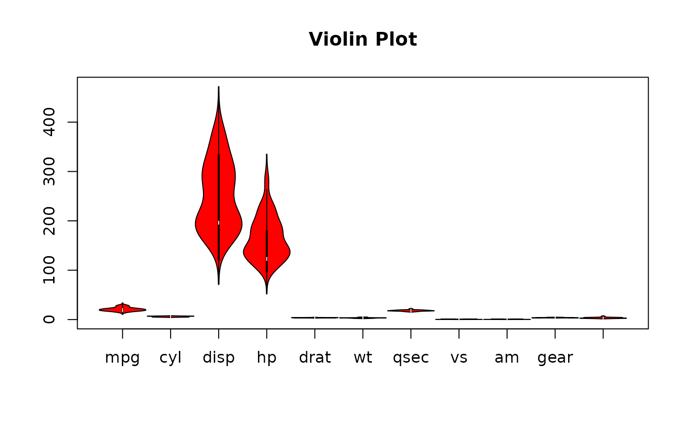
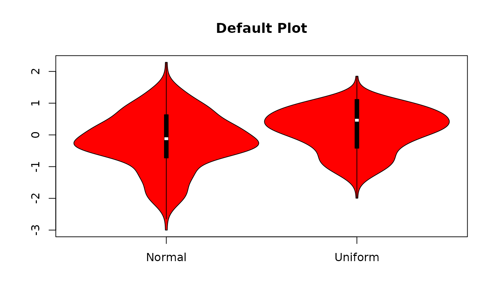
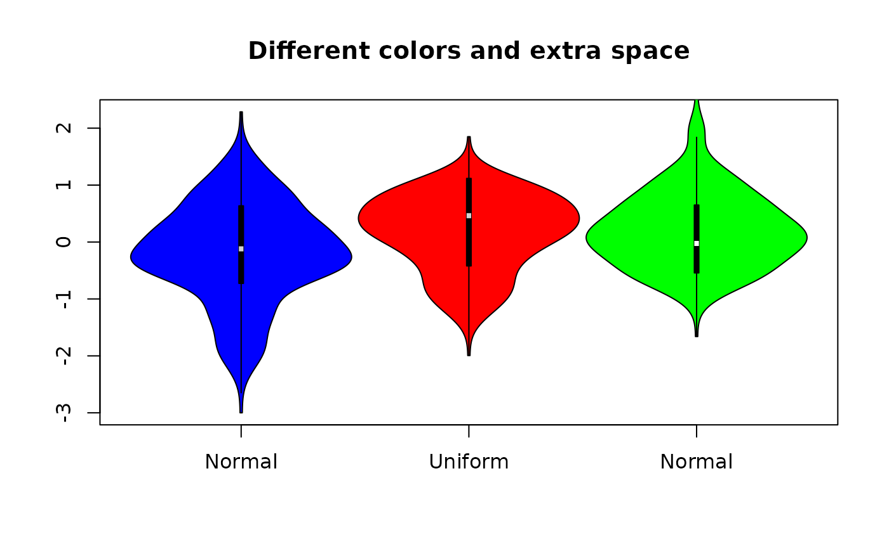

Display a "violin" plot
violin_plot.RdDisplays violin plots (rotated kernel density plots on each side of boxplots).
Usage
violin_plot(X=rnorm(50),at,add=FALSE,na.rm=TRUE,bw,violin_width,
violin_end_width=0.005,equal_width=TRUE,show_box=TRUE,box_width=0.01,
box_col="black",show_outliers=TRUE,outlier_pch=NA,range=1.5,xlim,ylim,
axes=TRUE,ann=TRUE,xlab="",ylab="",x_axis_labels,main="Violin Plot",
col="red",median_col="white",show_mean=FALSE,mean_pch=19,
mean_pch_col="yellow",...)Arguments
- X
A vector or matrix or data frame of numeric values.
- at
Horizontal position(s) for the violin plot(s).
- add
Whether this violin should be added to an existing plot.
- na.rm
Remove NA values. Passed to functions such as boxplot or density.
- bw
Vector or bandwidth values for density. Will be recycled. If not provided then will be calculated using bw.nrd0.
- violin_width
Multiplier to scale the width of the violin.
- violin_end_width
Multiplier to scale the width of the ends of the violin.
- equal_width
Should all violin widths be equal?
- show_box
Whether to display the box.
- box_width
Multiplier for the width of internal boxes.
- box_col
Fill color for the internal rectangle.
- show_outliers
Whther to display outliers as points.
- outlier_pch
Symbol for displaying outliers.
- range
Passed to boxplot.
- xlim,ylim
Explicitly set the plot limits.
- axes
Logical value indicating whether both axes should be drawn on the plot.
- ann
Annotate the plots with axis titles and overall titles.
- xlab,ylab
Labels for the X and Y axes.
- x_axis_labels
Labels for the violins.
- main
Title for the violin plot.
- col
Fill color for the violin(s). Will be recycled.
- median_col
Fill color for the median mark.
- show_mean
Whether to plot the mean as well as the median.
- mean_pch
Symbol to use for the mean.
- mean_pch_col
Fill color for the mean symbol.
- ...
Extra arguments passed to polygon used for representing violin(s).
Details
violin_plot displays one or more violin plots by drawing rotated kernel density curves on each side of box plots.
Examples
# plotting a data frame
violin_plot(mtcars)

set.seed(42)
normvar<-c(rnorm(49),-3)
unifvar<-runif(50,-2,2)
normvar2<-rnorm(45)
# plotting a matrix
violin_plot(matrix(c(normvar,unifvar),ncol=2),
main="Default Plot",x_axis_labels=c("Normal","Uniform"))

# plotting with different colors and with at specified
violin_plot(matrix(c(normvar,unifvar),ncol=2),at=1:3,
main="Different colors and extra space",
x_axis_labels=c("Normal","Uniform","Normal"),
show_outliers=TRUE,col=c("blue","red"),median_col="lightgray",
pch=6)
# adding a violin to existing plot
violin_plot(normvar2,at=3,add=TRUE,col="green",violin_width=1)
